Curso de Google Documentos › Menú Insertar
Video largo · Menú Insertar
Google Docs: menú Insertar paso a paso (tutorial completo)
Fecha del video: · Programado
Mirá el video completo
Estreno del video: 29/11/2026 · 17:00 (hora Argentina)
¿Sabías que desde un solo menú de Google Docs podés sumar imágenes, tablas, gráficos y hasta un índice? Este video de unos 2 minutos recorre el menú Insertar completo, opción por opción, con capturas reales de un documento de ejemplo («Lista de compras»). Abajo tenés cada parte resumida, con su captura y su atajo de teclado cuando lo tiene.
Capítulos: 00:00 Introducción: dónde está el menú Insertar · 00:16 Imagen, Tabla y Elementos de creación · 00:41 Chips inteligentes, Firma electrónica y Enlace · 00:54 Dibujo, Gráfico, Símbolos y Ecuación · 01:11 Tabulador, Marcador, Comentar y Saltos · 01:29 Elementos de página · 01:38 Así quedan la tabla y la línea horizontal · 01:52 Cierre.
1. Dónde está el menú Insertar
Abrí tu documento. El menú Insertar está arriba, entre Ver y Formato. Hacé clic y se despliegan sus opciones: Imagen, Tabla, Elementos de creación, Chips inteligentes, Firma electrónica, Enlace, Dibujo, Gráfico, Símbolos, Ecuación, Tabulador, Línea horizontal, Saltos, Marcador, Elementos de página y Comentar.
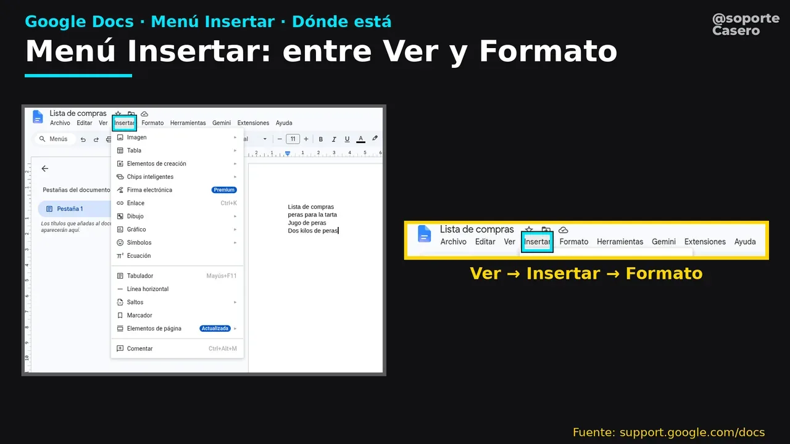
2. Imagen, Tabla y Elementos de creación
Insertar → Imagen te deja elegir de dónde sale la imagen: Generar una imagen, Subir del ordenador, Buscar en la Web, Drive, Fotos, Cámara o Por URL.
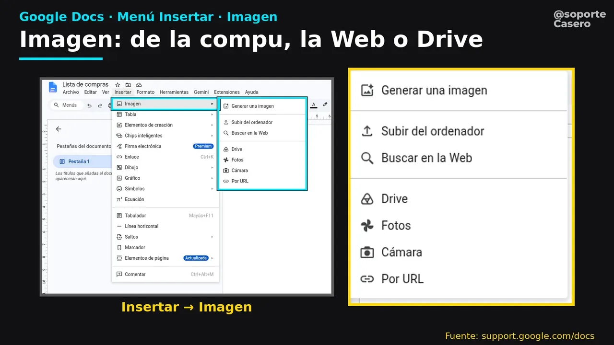
Insertar → Tabla muestra una grilla: pasás el mouse y elegís cuántas columnas y filas querés (en el ejemplo, 3 x 2). Según la ayuda oficial, las tablas pueden tener hasta 20 x 20 celdas.
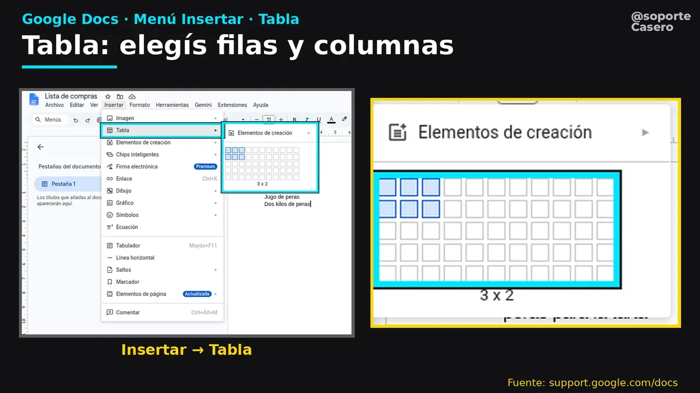
Insertar → Elementos de creación trae bloques listos para usar: Resumen de IA, Notas de la reunión, Borrador de correo, Bloque de código y Registro de decisiones sencillo. Con Ver más abrís la lista completa, ordenada por categorías.
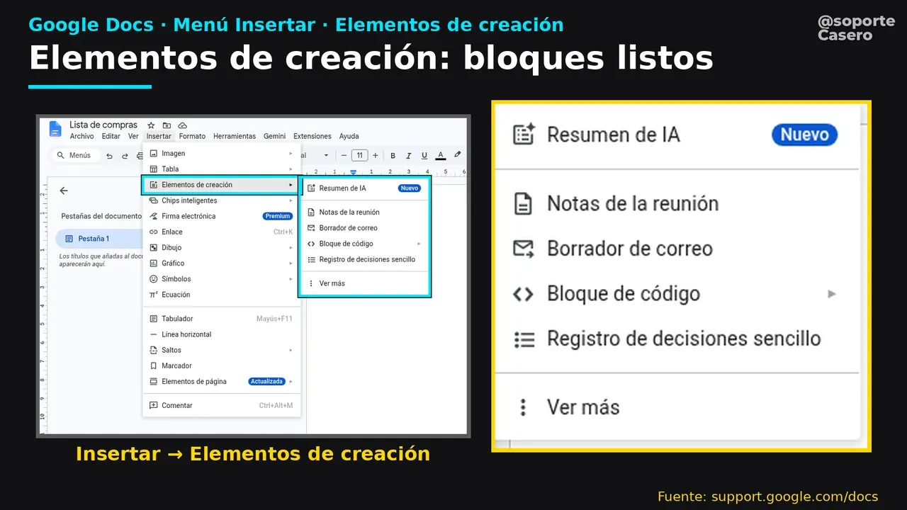
3. Chips inteligentes, Firma electrónica y Enlace
Insertar → Chips inteligentes reúne todos los chips: Fecha, Personas, Archivo, Evento del calendario, Espacio, Lugar, Chips de marcador de posición y Menú desplegable. También podés escribir «@» en el documento para ver sugerencias.
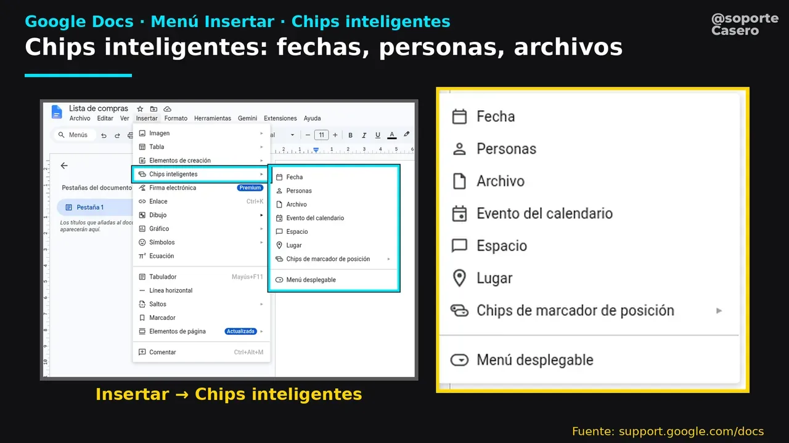
Firma electrónica aparece con la etiqueta Premium. Enlace (Ctrl + K) convierte el texto seleccionado en un vínculo.
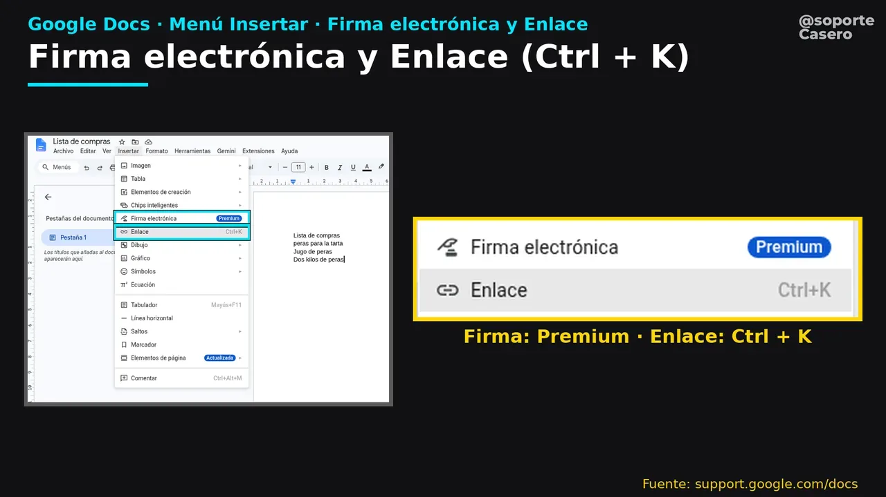
4. Dibujo, Gráfico, Símbolos y Ecuación
Insertar → Dibujo tiene dos opciones: Nuevo, para crear un dibujo con formas, líneas o texto, y De Drive, para traer uno que ya tengas.
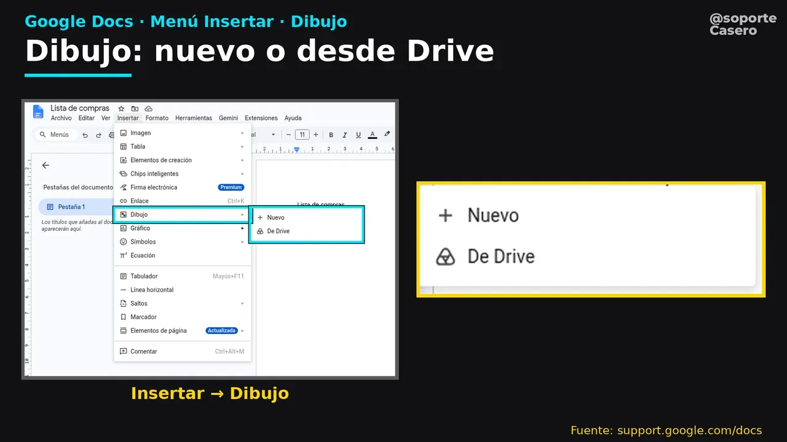
Insertar → Gráfico ofrece Barras, Columnas, Líneas y Circular, o De Hojas de cálculo para traer un gráfico existente. Un gráfico nuevo queda vinculado a una hoja de cálculo de Google, donde se editan sus números.
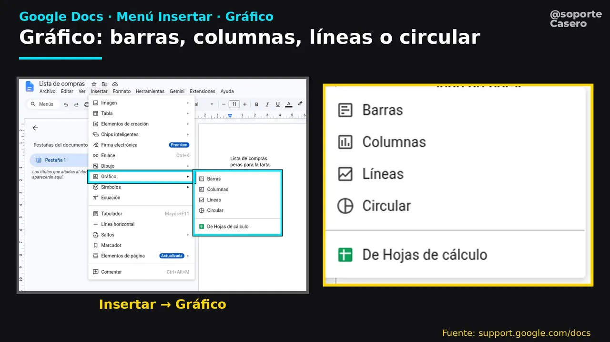
Insertar → Símbolos tiene Emoji y Caracteres especiales (como flechas, formas o tildes). Justo debajo está Ecuación, para insertar ecuaciones matemáticas.
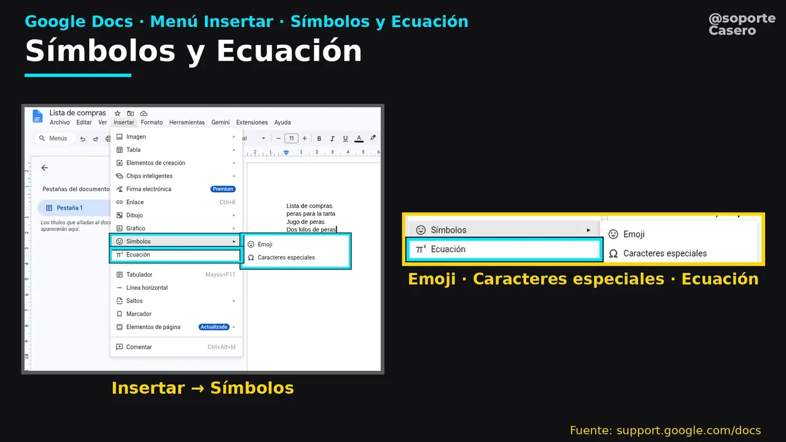
5. Tabulador, Marcador, Comentar y Saltos
En la parte de abajo del menú están Tabulador (Mayús + F11), Marcador, que marca un lugar del documento para enlazarlo y saltar ahí, y Comentar (Ctrl + Alt + M).
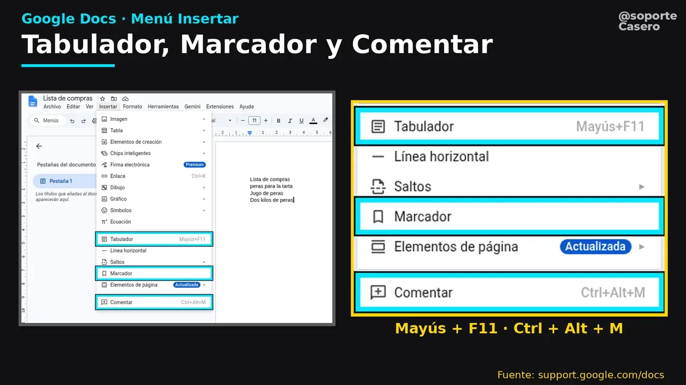
Insertar → Saltos agrega un salto de página (Ctrl + Intro) o un salto de sección (página siguiente o continuo). Ojo: solo funcionan en documentos con formato de páginas.
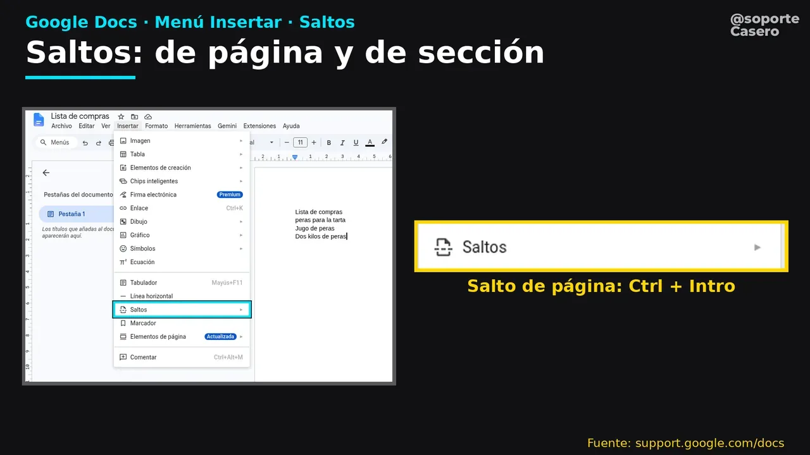
6. Elementos de página
Insertar → Elementos de página reúne Índice, Encabezado, Pie de página, Leyenda insertada, Comparar datos, Tabla de leyendas, Marca de agua, Números de página y Nota a pie de página (Ctrl + Alt + F).
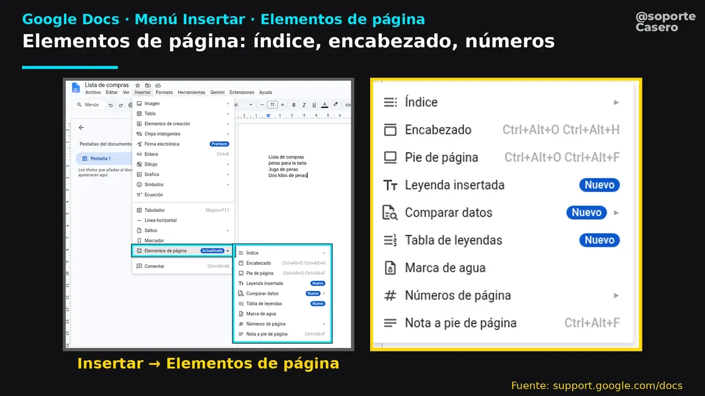
7. Así quedan la tabla y la línea horizontal
Con la grilla en 3 x 2, Docs agrega una tabla de 3 columnas y 2 filas justo debajo del texto, lista para completar.
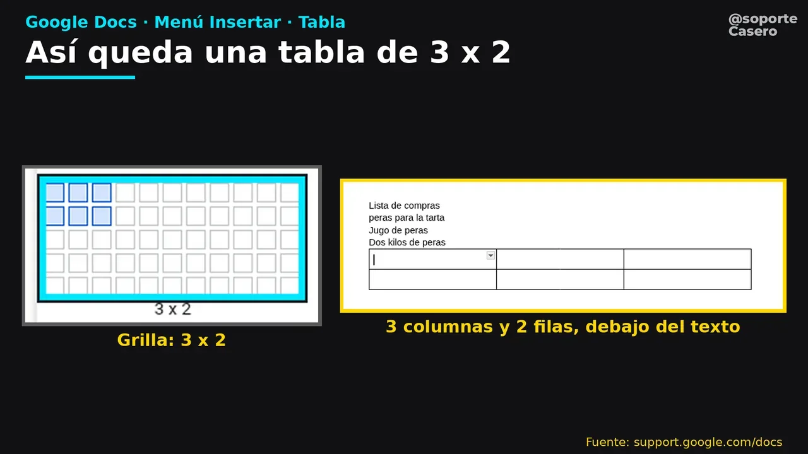
Insertar → Línea horizontal traza una línea de lado a lado; en el ejemplo quedó debajo de la lista.
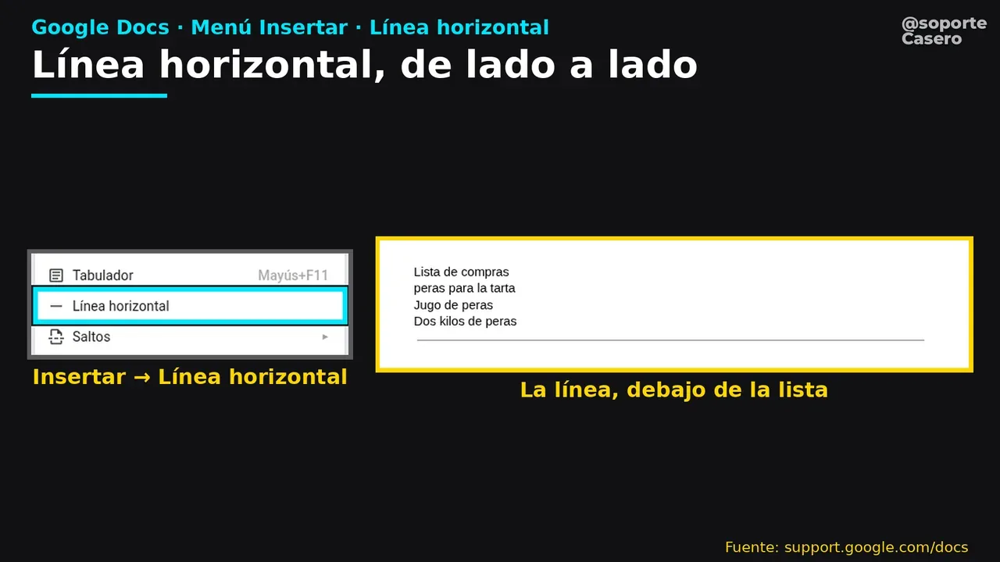
Lo que sigue: los Shorts de las opciones del menú Insertar se publican enlazados a este video largo. Mirá el calendario. ¿Te perdiste el anterior? Google Docs: menú Ver paso a paso.
Fuentes oficiales (Ayuda de Editores de Documentos de Google):
- https://support.google.com/docs/answer/97447?hl=es-419
- https://support.google.com/docs/answer/1696711?hl=es-419
- https://support.google.com/docs/answer/15740443?hl=es-419
- https://support.google.com/docs/answer/10710316?hl=es-419
- https://support.google.com/docs/answer/45893?hl=es-419
- https://support.google.com/docs/answer/179740?hl=es-419
- https://support.google.com/docs/answer/7009814?hl=es-419
- https://support.google.com/docs/answer/3371015?hl=es-419
- https://support.google.com/docs/answer/160749?hl=es-419
- https://support.google.com/docs/answer/11526892?hl=es-419
- https://support.google.com/docs/answer/86629?hl=es-419
- https://support.google.com/docs/answer/116338?hl=es-419
- https://support.google.com/docs/answer/179738?hl=es-419
Capturas propias en un documento de ejemplo («Lista de compras»). El video usa voz generada con IA.